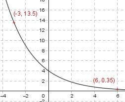

Aufgabe 20 Wie lautet die Funktionsgleichung einer Funktion der Form y = q*ax, wenn sie durch die Punkte (6|256/729) und (-3|13,5) geht? y = q * ax 256 x1 = 6 , y1 = ----- 729 x2 = -3 , y2 = 13,5 eingesetzt : 256 ----- = q * a6 (1) 729 13,5 = q * a-3 (2) Aus (2) : 13,5 = q * a-3 q 13,5 = ---- | *a3 a3 q = 13,5 * a3 In (1) eingesetzt : 256 ----- = 13,5 * a3 * a6 729 256 27 2 ----- = ---- * a9 | *---- 729 2 27 256 * 2 ------------ = a9 729 * 27 28 * 2 ---------- = a9 36 * 33 29 ----- = a9 39 a = Eingesetzt in (2) : 2 13,5 = q * (---)-3 3 2-3 13,5 = q * ---- 3-3 33 27 13,5 = q * ---- = q * ---- | *8 23 8 108 = q * 27 | :27 q = 4 2 y = 4 * (---)x 3
